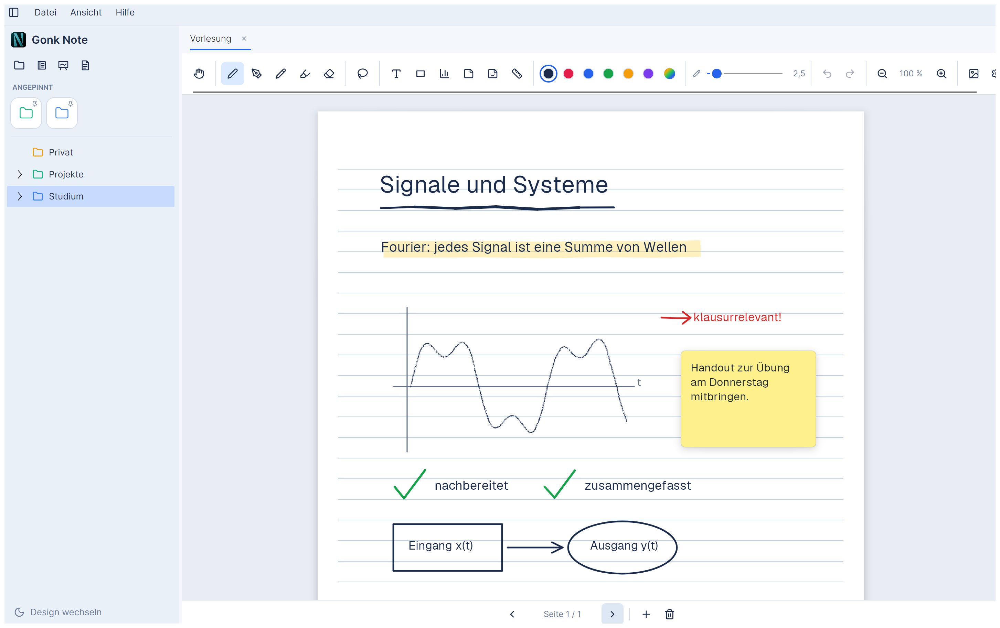
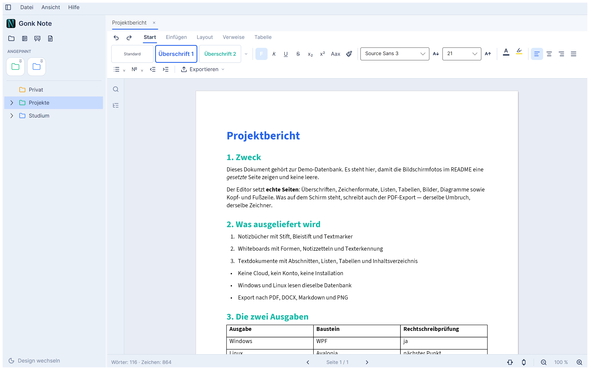
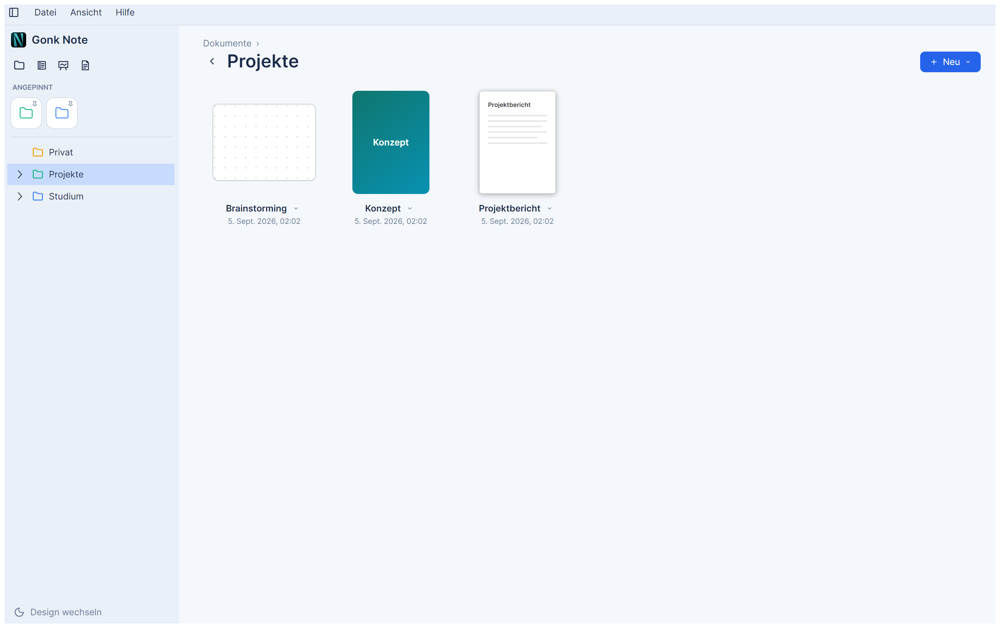

Notizbücher, Whiteboards und Textdokumente — auf Windows 11 und Linux. Stylus-freundlich, ohne Cloud, ohne Konto, ohne Installation.
Version 1.0.0 · MIT-Lizenz · Windows-Exe und Linux-AppImage laufen ohne installiertes .NET

A4- und A3-Seiten mit anpassbarem Cover, Stift, Bleistift und Textmarker samt Druck und Neigung, punktgenauem Radieren, Lasso und Formen-Stift.
Unendliche Zeichenfläche mit Punktraster, Notizzetteln, Stickern, Lineal und Geodreieck — und Texterkennung für Handgeschriebenes.
Ein eigener Editor, der echte Seiten setzt: Überschriften, Listen, Tabellen, Felder, Diagramme, Inhaltsverzeichnis, Kopf- und Fußzeile.
Import aus DOCX, Markdown und PDF; Export nach PDF, DOCX, Markdown und PNG. Was auf dem Schirm steht, schreibt auch der Export.


| System | Datei | Was zu tun ist |
|---|---|---|
| Windows 11 | GonkNote-1.0.0-windows-x64.zip |
Entpacken, GonkNote.exe starten. Der Ordner tessdata bleibt daneben liegen. |
| Linux | GonkNote-1.0.0-x86_64.AppImage |
chmod +x, starten. Braucht nur fontconfig und eine Schrift. |
| Linux, Flatpak | — noch nicht auf Flathub — | Bis dahin selbst bauen: packaging/flatpak/bauen.sh |
Gonk Note gibt es in zwei Ausgaben — einer für Windows (WPF) und einer für Linux (Avalonia). Beide können dasselbe, lesen dieselbe Datenbank und zeichnen mit demselben Renderer. Vier Unterschiede bleiben, und sie stehen namentlich da:
´ +
e → é) nicht an — ein gemeldeter Fehler im Fenster-Baustein,
nicht in Gonk Note. Buchstaben und Umlaute sind nicht betroffen.Die vollständige Liste samt Begründung steht im README.
Alles bleibt auf dem Rechner. Gonk Note legt beim ersten Start einen
Ordner an — %APPDATA%\GonkNote unter Windows,
~/.config/GonkNote unter Linux — und schreibt sonst nirgendwo hin: keine
Cloud, kein Konto, keine Registry, keine Telemetrie. Zum Deinstallieren reicht es, das
Programm und diesen Ordner zu löschen. Der Ordner ist gleichzeitig deine Sicherung.